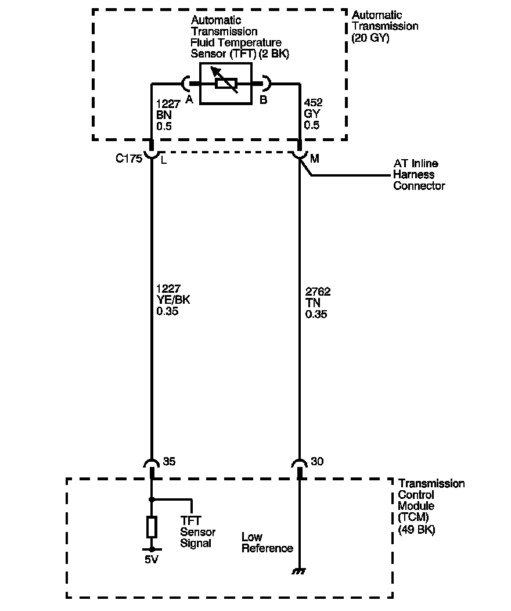

4L80-E / 4L85-E Automatic Transmission
DTC P0711

Circuit Description
The automatic transmission fluid temperature (TFT) sensor is part of the 4L80-E automatic transmission (AT) wiring harness assembly. The TFT sensor is a resistor, or thermistor, which changes value based on temperature. The sensor has a negative temperature coefficient. This means that as the temperature increases, the resistance decreases, and as the temperature decreases the resistance increases. The transmission control module (TCM) supplies a 5-volt reference signal to the sensor and measures the voltage drop in the circuit. When the transmission fluid is cold, the sensor resistance is high and the TCM detects high signal voltage. As the fluid temperature warms to a normal operating temperature, the resistance becomes less and the signal voltage decreases. The TCM uses this information to control shift quality and torque converter clutch (TCC) apply.
If the TCM detects the TFT sensor resistance has no change, intermittent, or an unrealistic change in a short amount of time, such as multiple changes within seconds, then DTC P0711 sets. DTC P0711 is a type C DTC.
DTC Descriptor
This diagnostic procedure supports the following DTC:
DTC P0711 Transmission Fluid Temperature (TFT) Sensor Performance
Conditions for Running the DTC
^ No ECT DTCs P0117 or P0118 - Condition 1, 2 and 4.
^ No AT ISS DTC P0716 or P0717 - Condition 1, 2 and 4.
^ No OSS DTC P0722 or P0723 - Condition 1, 2 and 4.
^ DTC P0711 has not passed this ignition cycle - Condition 1, 2 and 4.
^ System voltage is 8-18 volts.
^ The engine is running for greater than 5 seconds.
^ The engine coolant temperature (ECT) is 70° C (158° F) or greater - Condition 1 and 2.
^ ECT has changed at least 55° C (99° F) since start up - Condition 1 and 2.
^ The vehicle speed is 8 km/h (5 mph) or greater for 300 seconds (5 minutes) cumulatively - Condition 1 and 2.
^ The TCC slip speed is 120 RPM or greater for 300 seconds (5 minutes) cumulatively - Condition 1.
^ The engine torque is greater than 50 N.m (37 lb ft) - Condition 4.
^ The throttle position (TP) is between 8 and 90 percent - Condition 4.
^ The vehicle speed is greater than 8 km/h (5 mph) - Condition 4.
^ The ECT is between 39° C (38° F) and 149° C (300° F) - Condition 4.
Conditions for Setting the DTC
One of the following conditions occurs:
Condition 1
The TFT has not changed greater than 2° C (4° F), in greater than 80 seconds when the TFT at start-up is between -40° C (-40° F) and 20° C (68° F).
Condition 2
The TFT has not changed greater than 2° C (4° F), in greater than 80 seconds when the TFT at start-up is between 129° C (265° F) and 149° C (300° F).
Condition 3
The change in the TFT is 20° C (68° F) or less for 7 seconds or greater.
Condition 4
The TFT is 20° C (68° F) or less after a calibrated amount of time.
Action Taken When the DTC Sets
^ The TCM does not request the engine control module (ECM) to illuminate the malfunction indicator lamp (MIL).
^ The TCM commands increased line pressure.
^ The TCM freezes transmission adaptive functions.
^ The TCM determines a default TFT using the following matrix:
- If the engine run time is less than 60 seconds then default TFT equals 47° C (117° F).
- If ECT is less than 20° C (68° F), then default TFT equals IAT.
- If the ECT is 20-110° C (68-230° F) then default TFT equals ECT.
- If ECT and TFT DTCs are both set then default TFT is 140° C (284° F).
^ The TCM records the operating conditions when the Conditions for Setting the DTC are met. The TCM stores this information as Failure Records.
^ The TCM stores DTC P0711 in TCM history.
Conditions for Clearing the DTC
^ A scan tool clears the DTC from TCM history.
^ The TCM clears the DTC from TCM history if the vehicle completes 40 warm-up cycles without a non-emission related diagnostic fault occurring.
^ The TCM cancels the DTC default actions when the fault no longer exists and the DTC passes.
Diagnostic Aids
^ DTC P0218 may set approximately 600 seconds (10 minutes) after DTC P0711 has set. Follow the diagnostic table for DTC P0711 before proceeding to the diagnostic table for DTC P0218.
^ DTC P0711 defaults to an elevated line pressure condition which may result in partial TCC apply. This may produce an idle surge that could stall the engine.
Test Description
The numbers below refer to the step numbers on the diagnostic table.
2. This step inspects for proper transmission fluid level and condition.
3. This step verifies which condition has set DTC P0711.
5. The 12-volt test lamp is used as a fixed resistance.
6. This step ensures that the TCM monitors the TFT Sensor Signal circuit.